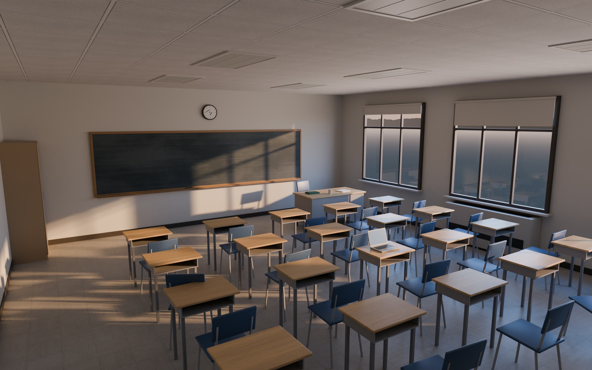

A free room echo check for classrooms. In about 2 minutes it estimates the echo time at one seat, compares it with the US classroom limit, and says who to ask next. If the claps are not clean enough, it gives no verdict. The audio never leaves this device.
Illustration: a box-shaped room of 30 × 25 × 10 ft (about 9 × 7.6 × 3 m) with the echo time you pick (0.45 s or 1.1 s). When it plays, it runs about 60 times slower than real time. It is a picture of the idea, not a measurement of any room.

The clap
First reflections
The laptop microphone
0.45 s after the clap
One clap. The sound leaves the front of the room in every direction.
The room answers. Walls, floor and ceiling send it back, each bounce a little later and a little weaker.
The echo time is how long that takes to fade. The US classroom standard asks for 0.6 s or less in an empty, furnished classroom up to 10,000 cubic feet (0.7 s from 10,000 to 20,000).
Echo Check+
Start
You need: Chrome on a laptop with a microphone, the rough room size, and 2 minutes with the room empty and quiet. An iPhone, iPad or Android device also works, but the page marks its result as less reliable.
Built to avoid a false pass
Blockedif the browser reports microphone processing on, or the audio shows clipping or a noise gate.
Incompleteif the claps are not clean enough. It names the band and says what to change.
"Under the limit (weak evidence)"only with a margin: the 3-band average more than 15 % below the limit, and no band over it. Quiet claps can still say "Likely over", never "Under".
This is a room echo check, not a hearing test and not a compliance measurement.
1. Room size
The US classroom limit depends on the room volume (ANSI/ASA S12.60-2010 Part 1).
A typical classroom is about 30 × 25 × 10 ft = 7,500 cubic feet.
2. Set up
Put this device on a student desk about 3–5 m (10–16 ft) from where you will clap, for example in the second or third row. Seats farther away often give no result unless the room is very quiet; seats closer than 3 m (10 ft) can miss part of the echo. Keep the microphone uncovered. Point the screen toward the front so you can see the big prompts.
Turn off microphone effects for this device:
Close other tabs and apps that use the microphone (video calls, voice assistants). If another tab holds the microphone with processing on, the browser can reuse that processed sound.
Keep the room empty and quiet. Nobody talks during the check. Close the door and windows. Switch off fans and the projector. If you are allowed to, pause the ventilation for the check and turn it back on afterwards: a quiet room is the most important condition for a result (in one US study of 164 classrooms, empty rooms were about 5 dB louder with the ventilation on).
Why: the claps show how long sound keeps echoing in the room. The counting shows how far a teaching voice stands above the room's background noise at this seat.
What you will do (45 s; the counter on the next screen counts down): press Start and walk quietly to the front. At about 36 on the counter, the page counts you in: "Clap 1 of 4 in 3…", then 2 and 1, then "CLAP NOW (1 of 4)". It does this 4 times, 4 s apart. Clap each time with cupped hands, as loud as you comfortably can (practise a few loud claps first: louder claps give a result more often). Stay quiet between claps. From 15 to 5 on the counter, count slowly from 1 to 20 in your normal teaching voice, and stop when the page says "Stop talking", even if you have not reached 20. The page stops by itself. It plays no sound.
3. Recording
Walk to the front quietly
45
Sample rooms
Simulated recordings run the full check on a computer-made recording with a known echo time. They are not real rooms.
Safety-rule demos (simulated)
Equally quiet claps in two rooms: the echoey room can still read "Likely over" from the early echo; the treated room gets "Incomplete", never "Under". The uneven room shows the per-band guard.
Real rooms, published data
Measured by researchers with professional equipment (ACE corpus: Eaton, Gaubitch, Moore and Naylor, IEEE/ACM TASLP 24(10), 2016, doi:10.1109/TASLP.2016.2577502; data doi:10.5281/zenodo.6257551). Values are the mean of the 500, 1000 and 2000 Hz 1/3-octave T20, two microphone positions. University rooms, not K-12 classrooms.
Result
Sentence for a report
For an assistive-technology evaluation or a note to the school. It says what this check found, in careful words: an estimate, never "complies".
Echo time (T20)
Echo time is how long a sound takes to fade away in the room (the time for a 60 dB drop, estimated from the part of the fade between 5 and 25 dB down). Shorter is better for hearing speech. The US classroom standard, which is voluntary unless a state or district adopts it, asks for 0.6 s or less in an empty, furnished classroom up to 10,000 cubic feet (0.7 s from 10,000 to 20,000).
Microphone trust
Speech margin at this seat
Limitations
This is an estimate from hand claps at one seat. It is not a compliance measurement. Only a proper measurement in the empty, furnished room at several positions can show compliance with ANSI/ASA S12.60.
Tested mostly on simulated claps. The only real claps so far come from one home test on one device. It has not been tested with real claps in a classroom, in browsers other than Chrome, or in occupied rooms.
This check cannot measure background noise against the 35 dBA limit in S12.60. In many classrooms, noise from heating, ventilation or corridors is the bigger problem.
For a student with hearing loss, the target is stricter. S12.60-2010 also asks that classrooms of 10,000 cubic feet or less be easy to adapt to 0.3 s for students with hearing loss. This check compares only with the 0.6 s or 0.7 s limit.
An "Under the limit" result is weak evidence. It never means a student has full access, and it must never be used to deny accommodations. Distance, seeing the speaker's face and the student's own hearing still matter.
It says nothing about anyone's hearing. It is not a clinical assessment and does not replace a Functional Listening Evaluation or an educational audiologist's review.
The page can read only the microphone settings the browser reports. It cannot read operating-system effects.